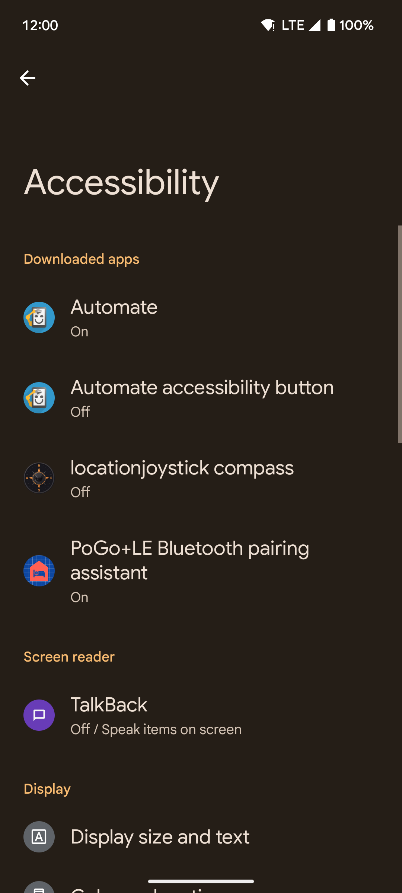
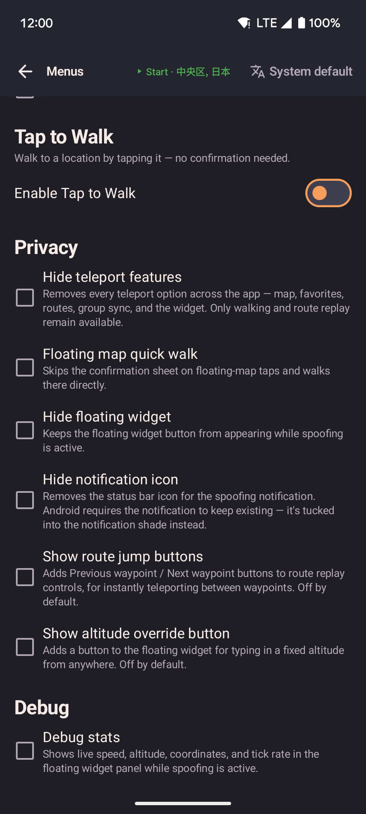
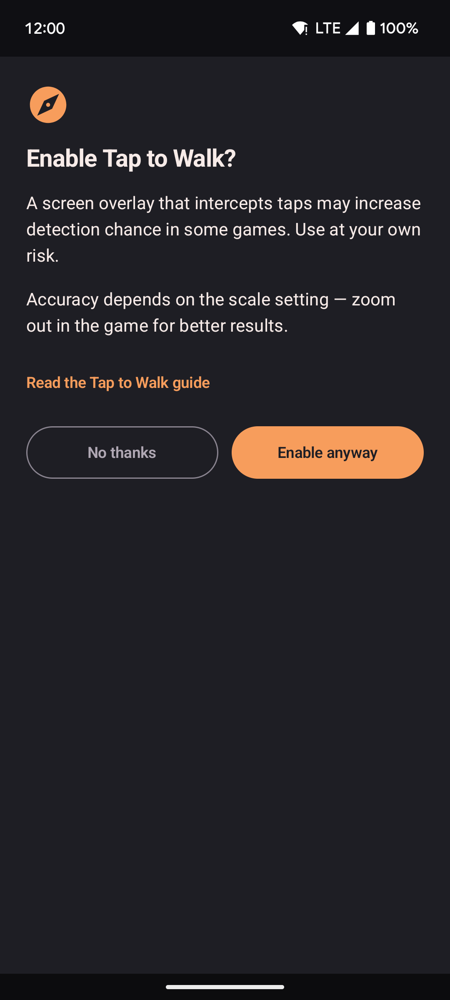

Tap to walk
Tap to walk gives you two shortcuts for moving your spoofed location with a single tap, without opening the app. Both are turned off by default. Turn them on under Settings → Menus → Tap to Walk.

- The Scale slider sets how many real-world meters each screen pixel stands for — match it to how zoomed in the game is.
- Compass orientation connects an accessibility service that keeps taps accurate even when the game map rotates.
- A warning appears the first time you turn Tap to Walk on, since some games can detect this kind of background helper.

- Pick your game from the Game app list, then tap Test to confirm detection works on your device.
Floating map quick walk
When this is turned on, tapping anywhere on the floating map walks to that spot right away — it skips the popup that normally asks whether to walk, teleport, or take roads. Useful once you already know where you're going.
Screen tap-to-walk overlay
This adds a crosshair button to the floating widget panel. Tap it once to place a clear layer over whatever app you're using — your next tap anywhere on screen becomes your walk destination, and the layer then disappears on its own.
To cancel without walking anywhere, tap the close button in the bottom-right corner.

- Turning the overlay on opens this screen first. It states the detection risk and that accuracy depends on the scale setting, and links to this guide. Nothing turns on until you tap Enable anyway.
Scale setting
The overlay turns your tap into a real-world location using the Scale value, in meters per pixel. A higher number covers more real-world distance per pixel, which suits a zoomed-out game map; a lower number suits a zoomed-in one.
If your taps land too far from where you meant, adjust the scale to match how zoomed in the game is — zooming out usually gives more accurate results, since small positioning errors matter less at that scale.
Important note
The overlay assumes the map you're tapping is oriented with north at the top. If the game rotates the map to follow your character, taps may not land where you expect. The Compass orientation feature below can correct for this automatically.
Some apps can detect when a location is being faked and may take action on your account. Only use this feature in apps where you understand and accept that risk.
Compass orientation
locationjoystick screenshots the tap-to-walk overlay the moment it opens and automatically finds your game's compass icon in its usual top-right spot. It uses the icon's direction to rotate the walk target so it lands correctly even when the game map is turned. There's no switch for this — it runs automatically once the accessibility service below is turned on.
Setup
The first time you turn Tap to Walk on, or the first time you tap the crosshair button, a full-screen message explains what the compass helper looks at, why, and that the picture of your screen never leaves your phone. Tap Agree to open Android's accessibility settings, or No thanks to stop. You are asked once — your answer is remembered.
- Tap Agree on that message.
- Find locationjoystick compass in the list and turn it on.
- Return to locationjoystick. Compass detection is now active — no further switch to flip.
To see the message again later, or to start from Settings instead, go to Settings → Menus → Tap to Walk → Compass orientation and tap Open Settings.
Verifying it works on your device
Pick your game from the Game app list, then tap Test — locationjoystick switches to it for you, captures its compass, and returns automatically. It shows the detected direction, or a message telling you to make sure the compass is visible if nothing was found. If you'd rather not pick an app, leave the list on Select app…: switch to your game yourself first, then switch back to locationjoystick and tap Test — it briefly minimizes itself to capture whatever's on screen.
Important note
Some apps can notice when this kind of background helper is active. If the game you use checks for this and limits features when it finds one, disable the locationjoystick compass entry in your phone's accessibility settings — there is no separate in-app switch.